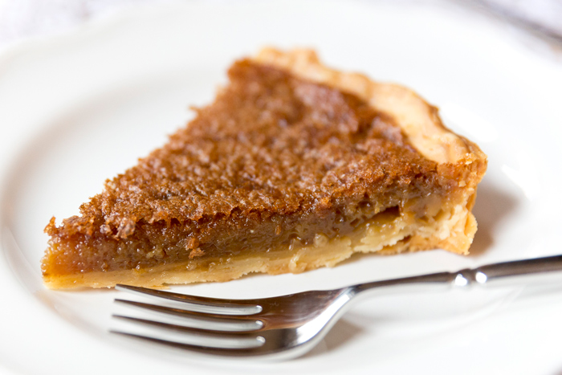
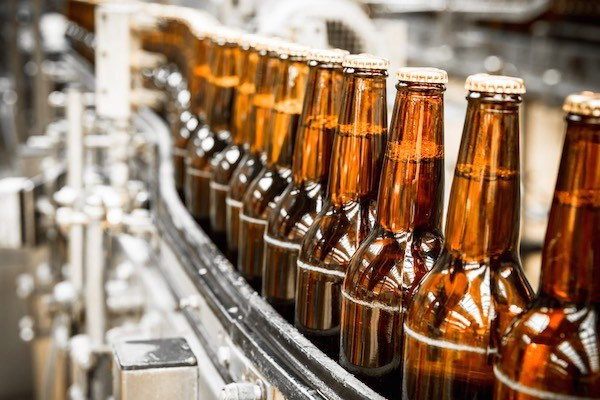
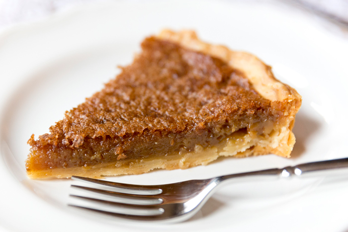
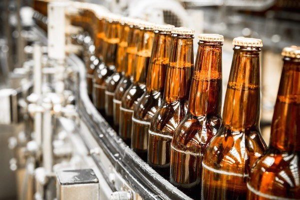
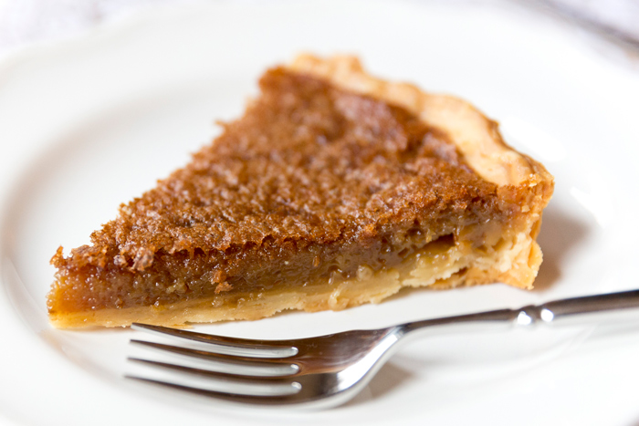
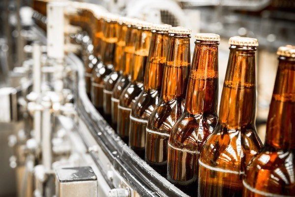

Manitoba Food and Drink
Winnipeg offers opportunities to experience the cuisine of the many and
diverse cultures that typify the city in restaurants or at numerous festivals
showcasing the food and culture of the region, such as Folklorama, A Taste of
Winnipeg and the Icelandic Festival of Manitoba. Rural Manitoba also offers a wide
choice of restaurants, from the very expensive to the moderately priced with good
home cooking.
Specialities:
- Traditional First Nations foods, such as bison, game, fish, wild fruit and grain.
- Bannock, flat bread cooked over an open fire, first brought by fur traders.
- Smoked fish and meats - try some delicious smoked Lake Winnipeg goldeye, or another
favourite, pickerel.
- Culinary imports include sushi, Ukrainian borscht or a delectable vinarterta dessert
from Iceland, consisting of thin cake layers sandwiched together with a cardamom-scented
prune filling.
- French-Canadian dishes, such as pea soup, tourti're and sugar pie.
Regional drinks:
Winnipeg in particular has a number of successful microbreweries, of which the Fort Garry Brewing
Company Ltd is the oldest and largest. Half Pints Brewing Company is also rapidly gaining popularity.
Both offer tours.


Sugar Pie
6 tablespoons butter or margarine
6 tablespoons of flour
2 cups of brown sugar
1 3/4 cups of milk
1 tsp of vanilla
1 recipe of your favorite pie dough
Melt butter. Add flour mixed with the brown sugar and caramelize on low heat or in microwave. Take off
heat, add milk and stir with a French whip or a wooden spoon until thick. Add vanilla and let cool. Pour
into a pie crust that has not been baked. Cover pie with dough and make slits.
Bake for 30-45 minutes at 450F. You should see little bubbles of hot sugar popping through the slits.
Watch out it is very hot!!
Homemade microbrewed beer
7 pounds, light, unhopped syrup
1 pound, Cara-pils malt, cracked
1-1/2 ounces, Hallertauer hops pellets
1 teaspoon, salt
1 teaspoon, citric acid
2-1/2 teaspoons, yeast nutrient
2 tablespoons, Irish moss
2 packs, Munton & Fison yeast
Put cara-pils and crystal malt in 2 gallon pot with 170-180 degree water for one hour, stir occasionally.
Sparge into boiling pot with enough water to bring volume to 3-1/2 gallons. Add syrup and 1 ounce of hops.
Boil one hour, adding Irish moss in last 1/2 hour and 1/2 ounce hops in last 10 minutes. Add salt, citric acid,
and nutrient. Put in primary with enough water to bring volume to 5 gallons. Pitch yeast at about 75 degrees.

 


